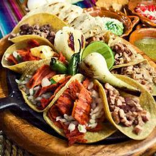

Favoritos



Publicado el 18 de Marzo de 2,017

La comida rápida se hace a menudo con los ingredientes formulados para alcanzar un cierto sabor o consistencia y para preservar frescura. Esto requiere un alto grado de ingeniería del alimento, el uso de añadidos y las técnicas de proceso que alteran substancialmente el alimento de su forma original y reducen su valor alimenticio. Esto hace que sea habitualmente calificada de comida basura o comida chatarra.
Publicado el 15 de Marzo de 2,017
A través de la historia, el destino de la especie humana ha estado inexorablemente asociado a los vegetales, desde el desarrollo de la agricultura, pasando por los grandes viajes de descubrimiento incentivados por la búsqueda de especias exóticas hasta la Revolución Verde. No existe razón alguna para suponer que el destino de la especie humana está actualmente más alejado de las plantas que hace siglos o milenios atrás.